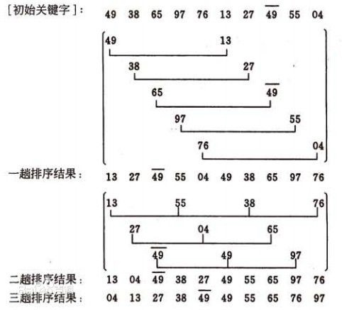

排序-说明
评价排序算法优劣的标准主要是两条：一是算法的运算量，这主要是通过记录的比较次数和移动次数来反应；另一个是执行算法所需要的附加存储单元的的多少。
若在待排序的记录中，存在两个或两个以上的关键码值相等的记录，经排序后这些记录的相对次序仍然保持不变，则称相应的排序方法是稳定的方法，否则是不稳定的方法（通俗地讲，就是两个相等的数不会交换位置）。
插入排序包括：直接插入排序，二分插入排序（又称折半插入排序），链表插入排序，希尔排序（又称缩小增量排序）。属于稳定排序的一种
路漫漫其修远兮吾将上下而求索
评价排序算法优劣的标准主要是两条：一是算法的运算量，这主要是通过记录的比较次数和移动次数来反应；另一个是执行算法所需要的附加存储单元的的多少。
若在待排序的记录中，存在两个或两个以上的关键码值相等的记录，经排序后这些记录的相对次序仍然保持不变，则称相应的排序方法是稳定的方法，否则是不稳定的方法（通俗地讲，就是两个相等的数不会交换位置）。
插入排序包括：直接插入排序，二分插入排序（又称折半插入排序），链表插入排序，希尔排序（又称缩小增量排序）。属于稳定排序的一种
直接插入排序的改进
不稳定

$arr = [10, 9, 29, 22, 6, 18, 30, 29];
function shell_sort(&$arr)
{
if (!is_array($arr)) return;
$n = count($arr);
for ($gap = floor($n / 2); $gap > 0; $gap = floor($gap /= 2)) {
for ($i = $gap; $i < $n; ++$i) {
for ($j = $i - $gap; $j >= 0 && $arr[$j + $gap] < $arr[$j]; $j -= $gap) {
$temp = $arr[$j];
$arr[$j] = $arr[$j + $gap];
$arr[$j + $gap] = $temp;
}
}
}
}
shell_sort($arr);
print_r($arr);
不稳定
工作原理:是每一次从待排序的数据元素中选出最小（或最大）的一个元素，存放在序列的起始位置，直到全部待排序的数据元素排完。
/**
* 选择排序也是一种简单直观的排序算法。它的工作原理很容易理解：
* 1初始时在序列中找到最小（大）元素，放到序列的起始位置作为已排序序列；
* 2然后，再从剩余未排序元素中继续寻找最小（大）元素，放到已排序序列的末尾。
* 3以此类推，直到所有元素均排序完毕。
* 注意选择排序与冒泡排序的区别：
* 冒泡排序通过依次交换相邻两个顺序不合法的元素位置，从而将当前最小（大）元素放到合适的位置；
* 而选择排序每遍历一次都记住了当前最小（大）元素的位置，最后仅需一次交换操作即可将其放到合适的位置。
*/
$s = [1, 9, 2, 8, 3, 7, 100, 24, 21];
$n = count($s);
// 最差时间复杂度 ---- O(n^2)
// 最优时间复杂度 ---- O(n^2)
// 平均时间复杂度 ---- O(n^2)
for ($i = 0; $i < $n - 1; ++$i) {
$num = $i;
for ($j = $i + 1; $j < $n; ++$j) {
if ($s[$j] < $s[$num]) {
$num = $j;
}
}
if ($num != $i) {
swap($s, $i, $num);
}
}
print_r($s);
function swap(&$s, $i, $j)
{
$temp = $s[$i];
$s[$i] = $s[$j];
$s[$j] = $temp;
}
插入排序分为：直接插入排序 希尔排序(缩小增量方) 折半插入排序（二分插入排序）
/**
* 直接插入排序不适合对于数据量比较大的排序应用。但是，如果需要排序的数据量很小，比如量级小于千，那么插入排序还是一个不错的选择。
* 1从第一个元素开始，该元素可以认为已经被排序
* 2取出下一个元素，在已经排序的元素序列中从后向前扫描
* 3如果该元素（已排序）大于新元素，将该元素移到下一位置
* 4重复步骤3，直到找到已排序的元素小于或者等于新元素的位置
* 5将新元素插入到该位置后
* 重复步骤2~5
*
*/
// 分类 ------------- 内部比较排序
// 数据结构 ---------- 数组
// 最差时间复杂度 ---- 最坏情况为输入序列是降序排列的,此时时间复杂度O(n^2)
// 最优时间复杂度 ---- 最好情况为输入序列是升序排列的,此时时间复杂度O(n)
// 平均时间复杂度 ---- O(n^2)
// 所需辅助空间 ------ O(1)
// 稳定性 ------------ 稳定
$s = [9, 1, 2, 8, 3, 7, 100, 24, 21, 2];
$length = count($s);
for ($i = 1; $i < $length; ++$i) {
$get = $s[$i]; // 右手抓到一张扑克牌
$j = $i - 1; // 拿在左手上的牌总是排序好的（j是当前位置）
while ($j >= 0 && $s[$j] > $get) { //拿到的牌小于前面的元素
$s[$j + 1] = $s[$j]; // 如果该手牌比抓到的牌大，就将其右移
$j--; //这个变量就是为了找到这个位置
}
$s[$j + 1] = $get; // 直到该手牌比抓到的牌小(或二者相等)，将抓到的牌插入到该手牌右边(相等元素的相对次序未变，所以插入排序是稳定的)
}
print_r($s);